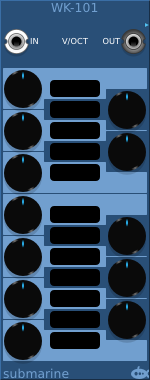

The WK-101 takes a note CV and quantizes it to a 12-ET chromatic scale. It then adjusts the quantized signal up or down by up to 50 cents according to which pitch it has been quantized to. Each of the 12 pitches can have a different adjustment specified by using the control knobs. The cent adjustment is displayed to the side of each knob.
The currently recognized pitch is indicated by the index light in the adjustment knob turning red.
The context menu offers presets which you can configure. See below for more details
The WK-205 has 5 input and output pairs. It takes each note CV input, quantizes it to a 12-ET chromatic scale, and then adjusts the quantized signal up or down by up to 50 cents. There are no control knobs on the WK-205 so the adjustment settings must be selected either from presets on the context menu, or by synching the device from a WK-101 as an extension module. Place the WK-205 to the immediate right of a WK-101 or another WK-205.
Presets are loaded from two different sources.
The SubmarineFree plugin directory contains a Scala subdirectory. Scala format .scl files are read from here. Note that the Scala application has far greater capabilities than the WK devices are intended to support, so not all Scala files will contain information the the WK devices can use. A maximum of 12 tunings will be read from the file, any more will be ignored. The WK devices always assume that the tonic in the Scala file is C; since the Scala format takes all tunings relative to the tonic, it does not include a tuning for the tonic itself. If a 12th ratio is present in the file, it will be used to provide a tuning for C. The fill will be rejected if any ratio is more than 50 cents from the 12-ET tuning.
Presets can also be defined in the WKCustom.tunings file. This is not included in the plugin release, but you can copy the WKCustom.tunings.template file to use as a starting point.